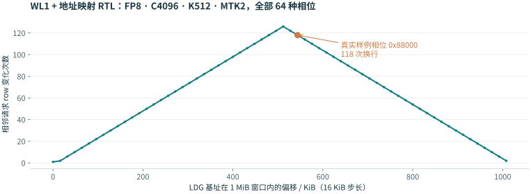
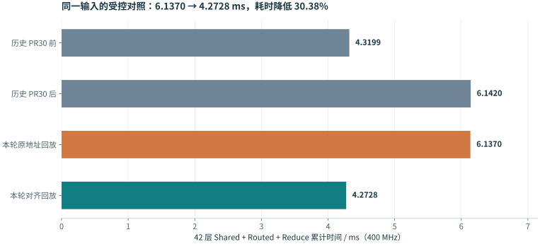
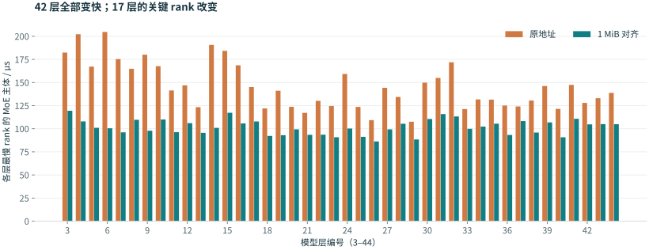

先说明现象：退化由更新暴露，触发条件来自真实地址
“昨晚单算子只慢了一点”与“真实推理的 MoE 明显变慢”可以同时成立：两次测试的权重起点没有处于同一种地址条件。
原报告冻结同一 Routed 机器码、同一数值输入，只切换新旧 CycleSim。权重从 LDG 起点分配时，周期几乎不变；复制真实推理 rank0/layer3 的权重偏移后，新模拟器显示了显著增加的等待。这里的 MoE kernel 是 Routed 的 Gate/Up、SwiGLU、Down 主体，不是 Router，也不是整个层的所有计算和通信。[1]
| 同一个 Routed kernel 的地址条件 | PR30 前 | PR30 后 | 耗时变化 |
|---|---|---|---|
| 从 LDG 起点分配 | 28,063 | 27,984 | −0.3% |
| 使用整模真实权重偏移 | 28,063 | 50,639 | +80.4% |
表中为双核最大 cycles。旧版 3f24a0c8 → PR30 合入 5381df33 → 报告使用 f53f23b0。新旧输出逐字节一致。独立测试设置同样的地址相位也能复现，因此并非只有运行整模才会触发。
真实地址怎样形成？
权重按加载顺序进入每核 LDG，前面的小分配会改变后续大矩阵的起点。地址审计比较了 5,376 个新旧指针出现位置，差异为零；step0 与 step1 也相同。step1 的 1,344 个逐核 GateUp 起点全部未对齐到 1 MiB，相位分布在 0x88000…0xd8000。这说明地址相位是模型加载的稳定结果，不是随机测量噪声。[2]
先对齐术语：模型的权重，怎样对应到 PE 的 C 和 K？
数学上，权重记为 W[Kₕ,C]，一次投影为 Y[M,Kₕ] = X[M,C] × Wᵀ[C,Kₕ]。本文沿硬件命名：C 是输入/归约维，Kₕ（下文简写 K）是输出通道维。它们分别对应常见 GEMM [M,K] × [K,N] 的 K 和 N。“C4096、K512”表示 4096 输入通道投影到 512 输出通道。MTK 也沿这个输出 K 维分组。[3]
| 后文术语 | 在本报告中的含义 | 影响什么 |
|---|---|---|
| LDG / WL1 / MC | 每核权重逻辑地址空间 / 权重读取与供数通路 / 存储控制器 | 依次回答“放在哪里、按什么顺序取、什么时候允许读” |
| miniblock / minitile | 基本数据块 / 由若干基本块组成的 PE 计算分组 | FP8 本例的基本权重块为 128C × 128K；分组由配置决定 |
| MTC / MTK | 本例有效 C / K 基本块分组数 | 改变分组内读序、复用与计算组织，不改变数学矩阵的总 C / K |
| SC / TC，PIC / PIK | 源矩阵 C 跨度 / 当前计算 C 宽度，源矩阵 C / K 方向的起始偏移 | 共同确定子矩阵的物理地址，不能只看本次 tile 的形状 |
| row / CAS | MC 当前打开的存储行 / 本实验统计的读命令事件 | 行冲突增加读命令之间的等待；CAS 区间不等于 PE 或 kernel 耗时 |
| GLM53 Flash 权重 | 存储对象 / 分核方式 | 每核容量 | 每 rank 容量 |
|---|---|---|---|
| Routed GateUp · FP8 | E72 / rank，36 experts / core；每 expert [1024,4096] | 144 MiB | 288 MiB |
| Routed Down · FP8 | 每 expert [4096,512] | 72 MiB | 144 MiB |
| 当前 DP16 Shared · BF16 | 完整 I2048，核内各处理 I1024；Gate、Up、Down 独立分配 | 3 × 8 MiB | 48 MiB |
| 原包 TP4 Shared · BF16 | rank 内 I512，再分双核；用于本次 42 层历史对照 | 3 × 2 MiB | 12 MiB |
当前 DP16 Shared 与原包 TP4 Shared 是不同拓扑，后文分别报告。小矩阵、其他模型和 dtype 不应直接照搬这张表。Routed pack 的 scales 没有被当作大权重统一对齐。[8][9]
权重怎样排，MTK 就沿着怎样的跨度取数
3.1 三件容易混为一谈的事
先统一维度：本文沿用硬件命名，C = CI（输入通道 / 归约维），K = CO（输出通道维），这里的 K 不是常见 GEMM 记法中的归约维。以下实例取 FP8 权重 W[CO, CI] = W[512, 4096]：共有 512 个输出通道，每个输出通道有 4096 个输入权重。
存储顺序：字节放在哪里
本节的地址公式针对 dense 排布。FP8 普通 KC 路径以 128 × 128 = 16 KiB miniblock 为单元；先沿 C 方向排完同一 K 带，再排下一 K 带，因此间距由完整源 C pitch决定。blocked 则先把矩阵物理分成子块，再在各子块内排布；它有自己的块内 pitch，不能继续套用整张矩阵的 dense stride。
访问顺序：先读哪个 block
由 minitile 的分组及 WL1 遍历规则控制。MTC、MTK 分别给出 C、K 方向一组的 miniblock 数。本例有效 MTC=16、MTK=2：在一个 C block 位置先读两个 K block，再走到下一个 C block。minitile 不重新排列已存好的权重，却决定读取时怎样在它们之间跳转。
blocked 从哪里改变这张图？例如把同一张 W[512,4096] 沿 C 先物理分成两个 W_block[512,2048]，各块分别打包：第一个子块内先排 k0 的 16 格，再排 k1 的 16 格，块内相邻 K 带间距就变成 16 × 16 KiB = 256 KiB。还需配套子块地址、SC 描述符和分块计算；只把计算 TC 调小、字节仍按原 dense 顺序放置，间距仍是 512 KiB。
第三件事是分配起点：矩阵内部排布完全不变，整体平移 0x88000 也会改变这些访问落入哪些 MC row。修复 PR 只改这一层。base_alignment_bytes 与内部 packing 参数 aligned_size 含义不同；当前 Routed 使用 aligned_size=0 和整 expert PATCH，得到本例所分析的连续 miniblock 顺序。本文的“dense”是普通权重寻址/排布，不是要求把 runtime 参数改成 -1。[9]
3.2 把读序写成可核对的公式
这里每个 MC 接收两次 32-byte 读，256 个 MC 共同完成一个 16 KiB miniblock。C_storage 对应物理源矩阵跨度（SC/WC），C_tile 对应本次 PE 计算宽度（TC）。仅把 TC 从 8192 改小，不会自动缩短 K block 的物理间距；必须改变源排布/SC 才能改变该间距。[5]
for k_group in K_blocks grouped by MTK:
for c_group in C_tile_blocks grouped by MTC:
for c_block in c_group:
for k_block in k_group:
read miniblock(k_block, c_block)这是经本例 WL1 RTL 地址序列核对的说明性伪代码。硬件字段 MTK0=1 表示有效 MTK=2。BF16 的基本 C block 为 64、K block 为 128，仍是 16 KiB；不能把 FP8 的 128×128 元素几何直接套到 BF16/INT4、indexed、UScale 或 V-cache 路径。[3]
在图上执行这段循环：虚线框圈出一个 MTC × MTK 分组；框内先沿 K 方向读取，再推进一个 C block。读完当前 C 组就移到下一个 C 组；整条 C 遍历完后，再换到下一个 K 组。MTC 改变分组边界；在本例 MTW=1、无尾块的单次权重遍历中，仅改变 MTC 不改变展平后的 miniblock 次序。MTK 则直接改变同一 C 位置交错读取多少个 K 带。分组边界本身不等于 MC 换行，换行要看具体地址。
跟着 minitile 读一遍：坐标 → 地址 → MC row
每一步代表一个完整 miniblock；在观察的单个 MC 上，它对应两个连续 32-byte 请求。动画是读取顺序示意，播放速度不代表硬件周期，也不包含背压、PE 计算与请求重叠。
静态示例：dense · C4096 / K512 · 有效 MTC16 / MTK2 · base=0x88000。前四步如下；MC 行切换会在这些地址之间反复发生。
| 读取次序 | 坐标 (k, c) | miniblock 编号 | 每核 LDG 地址 | 单 MC row |
|---|---|---|---|---|
| 1 | (0, 0) | #0 | 0x088000 | 0 |
| 2 | (1, 0) | #32 | 0x108000 | 1 |
| 3 | (0, 1) | #1 | 0x08c000 | 0 |
| 4 | (1, 1) | #33 | 0x10c000 | 1 |
建议依次看“真实偏移”的前四步 → 切到“对齐起点” → 切到“C8192” → 切到“blocked 子块”。blocked 只展示一个独立打包子块的地址流，不把它当作整张 C8192 GEMM 的性能结果。更完整的 MC 地址映射见下一节，实测周期在后文另列。[3][5]
LDG 是逻辑地址空间；真正等待发生在 MC 的行状态机里
LDG 权重空间按硬件通路分布到多个 MC。WL1 根据 PE 配置发起权重请求，经 hub 分发、地址映射和 MC 状态机取数，再经回包与 credit 机制向 PE 供数。算术指令和总字节数相同，不保证供数时间相同。[3][4]
4.1 为什么是 1 MiB？
在本实验的 splicing=1、bank-map 0xe4 配置下，单 MC 列地址为 7 bit，128 列，每次 32 bytes：每 MC 的行容量为 4 KiB。乘上 256 个 MC，得到同一 row 编号覆盖的每核 LDG 逻辑窗口 1 MiB。这不是“一个 MC 的行有 1 MiB”，也不是操作系统页大小。[4]
gdg_axi2frame.v 的列/行切片直接决定窗口大小；splicing=0 使用不同 bank/row 切片，需要重新推导。[4]4.2 换行为什么比“多读一点”更贵？
open-page 模式保留当前 row。同一 row 的后续列读取可以连续发射；遇到不同 row，控制器需要满足原行有效期和读后约束、执行 precharge、等待 tRP，再激活新行并等待 tRCD。若访问顺序来回切换，刚打开的行很快又被关闭，这些等待会反复出现。row_id_status 与读路径的 R_PRECHARGE / R_TRP_CNT / R_TRCD_CNT 等状态表达了这种行为。[4][6]
PR30 让符合条件的普通 BF16/FP8/INT8 KC 路径走 Wl1WeightTiming，按真实请求顺序测量供数区间，再与计算、写回等边界组合；旧的理想供数上限看不到由 SC、PIC、基址和 K 内层循环产生的 row 冲突。这个路径有明确的 dtype、模式和配置条件，并非所有 PE 指令一律采用同一个模型。[3]
关键不只是“地址没对齐”，而是地址相位遇上交错读序
对 FP8 C4096、K512、MTK2，两个 K block 的间距是 512 KiB。从 1 MiB 边界开始，两者能落在同一逻辑 row 窗口；起点偏移 544 KiB 后，同一个 C block 对应的两次 K 读取落在不同 row，于是出现 A,A,B,B,A,A,B,B…。
基址 0：相同 row
单 MC 首批 word：0,1,64,65,2,3,66,67…
row 序列：0,0,0,0,0,0,0,0…
整个 C4096×K512 请求序列，256 请求 / MC。
基址 0x88000：跨 row 往返
单 MC 首批 word：68,69,132,133,70,71,134,135…
row 序列：0,0,1,1,0,0,1,1…
总请求数、权重字节、计算形状均相同。[5][6]
FP8 · C_storage=4096 / C_tile=4096 / K512 · MTK2 · base=0x88000
相同数据、不同相位：两个 K block 交错读取时反复切换 row。
每个色块表示一次 32-byte / MC 请求，展示前 32 次；数字为 row，完整切换数由全部请求统计。该交互限定 FP8、普通 KC、低地址 bank、MTC16，不估计 PHY、PE 或完整 kernel 时间。

三个必须保留的反例
| 场景（FP8） | 机制 | 结论 |
|---|---|---|
| C8192、K512、MTK2 | 相邻 K block 间距已是 1 MiB，两个 K block 必然跨 row | 起点对齐仍反复换行；需要物理分块或读序选择 |
| C8192、K128、MTK2 | 只有一个有效 K block，第二个被边界裁掉 | 不会因 MTK2 产生同样的 K block 往返；不能只看配置值 |
| C2048、K256、512 KiB、MTK2 | base=0xc0000 时跨过 1 MiB 边界并交错访问 | 31 次换行；“小于 1 MiB 一定安全”不成立 |
筛查风险时，可先看 ΔK = C_storage × K_block × element_bytes，再看实际有效 K block 数、MTK 分组、起点和 tile 内偏移。总 tensor 容量只是线索，完整物理访问序列才是判据。即使一个 MTK 组的字节量小于 1 MiB，也要检查它是否跨窗口，不能只比较大小。[5]
三层证据相互印证，各自的边界也要保留
6.1 MC 控制器：这组等待确实存在于 RTL
把 WL1 实际生成的请求喂给原始 MC RTL，并用相同输入驱动 C++ 模型，逐拍比较 ready、FSM/计数器、precharge 和 CAS。A=起点地址、B=真实偏移、C=向上对齐三组各比较 8,191 个采样点，零差异；256 个请求均被接收、完成。[6]
| 同一 C4096 / K512 / MTK2 序列 | row 切换 | 首次 CAS | 末次 CAS | CAS 区间 |
|---|---|---|---|---|
| A · 起点地址 | 1 | 13 | 279 | 267 |
| B · 相位 0x88000 | 118 | 13 | 2,268 | 2,256 |
| C · 每核向上对齐 | 1 | 13 | 279 | 267 |
CAS 区间 = last − first + 1，单位为控制器周期。该实验使用连续请求 producer；不包括 PHY 数据返回、PE 算术和整片执行。它证明 MC 状态机的地址相关等待，不证明整个 CycleSim 与全芯片逐拍一致。
6.2 VCS 单 GEMM：地址 × MTK 的正交对照
抽出实际 Routed 的 FP8 Gate/Up PE pattern：M1 / C4096 / K512、FP32 输出。固定输入和工具链，不重编译；地址组只改 weight-base 参数及加载地址，MTK 组只改 ISA 的 MTK immediate。配置字与原 Routed 指令一致，但独立 LD/ST、寄存器和 mailbox 外壳不同。[7]
| 有效 MTK / 基址 | VCS PE | CycleSim PE | VCS 整 kernel | CycleSim 整 kernel |
|---|---|---|---|---|
| MTK2 / 0 | 498 | 473 | 1,136 | 1,223 |
| MTK2 / 0x88000 | 2,358 | 2,333 | 2,996 | 3,083 |
| MTK1 / 0 | 599 | 606 | 1,237 | 1,356 |
| MTK1 / 0x88000 | 599 | 606 | 1,237 | 1,356 |
最有解释力的是差值：MTK2 下 VCS 与 CycleSim 的 PE 地址惩罚都为 +1,860 cycles；MTK1 下两者都不随地址变化。但 VCS 和 CycleSim 的绝对 PE、整 kernel cycles 并不相同。因此应说“机制和该对照增量一致”，不能写成“完整 GEMM 逐拍一致”。
4 个 VCS 作业均 PASS，四组输出 SHA256 相同，且与 CycleSim 输出逐字节一致；对 CPU golden 的最大绝对误差为 7.63×10⁻⁶，属于数值对照而非 CPU bit-exact。对齐地址上的 MTK2 仍快于 MTK1，所以简单把所有算子强制改成 MTK1 会牺牲原本良好的访问组合。生产 kernel 应继续由编译器选择合适的 PE/minitile，不在本修复中新增手工固定配置。[7]
6.3 对齐不足时，物理分块能做什么？
| 固定 FP8、MTK2、对齐起点 | 总读取字节 | row 切换 | 控制器 CAS 区间 |
|---|---|---|---|
| C8192×K512，dense 物理跨度 | 4 MiB | 255 | 4,847 |
| 2 个物理 C4096×K512 block | 4 MiB | 3 | 545 |
| 4 个物理 C2048×K512 block | 4 MiB | 3 | 545 |
这验证了改变物理跨度可以让请求集中在 row 内；单纯把 TC 改为 2048、仍保留 SC8192 时，1 MiB 访问里仍有 63 次换行、CAS 区间 1,199 cycles。与此同时，blocked 方案需要更多 PE tile、跨 C 部分结果累加及新的 pack/descriptor 契约；上表只测地址与控制器，尚不能宣称完整 GEMM 也快 4,847/545 倍。[5]
回到原来的问题：整段 MoE 性能恢复了多少？
针对原报告的 BS16、64K 工作负载、decode step1，覆盖 layer3–44、16 rank，保留原包 TP4 Shared。冻结原机器码、实际 expert 路由与合成数值输入，逐 launch 只对齐权重地址；Reduce 消费各自组的 Routed/Shared 回放输出。全部采用完整数值模式。[8]

| 阶段 | 每组 launch | 前后输出一致 | 逐核周期变化 |
|---|---|---|---|
| Routed | 672 = 42 × 16 | 672 / 672 | 每次双核最大耗时均降低 |
| 原包 TP4 Shared | 168 = 42 × 4 | 168 / 168 | 全部不变 |
| Reduce | 672 = 42 × 16 | 672 / 672 | 全部不变；另有 672 个 CPU 精确对照 |
| 总计 | 1,512 / 组 | 1,512 / 1,512 | 共 3,024 launch / 6,048 core |
每层先累加各 rank 的完整主体，再选最慢 rank。不能把各阶段最慢 rank 分别选出来相加，也不能把单 Routed 的 44.74% 收益乘到整表。修复后 17 层关键 rank 改变：关键路径上 Shared 分项占比可能增加，但每次 Shared launch 本身并没有变慢。

展开全部 42 层数据表
| 层 | 原地址 cycles | 对齐 cycles | 减少 | 关键 rank |
|---|
历史对照、回放实测和回填重建，分开记录
原表是 4.3199325 → 6.1419950 ms（+42.18%）。本轮是 6.1369825 → 4.2728050 ms（−30.3761%）。原地址回放比原表少 5.0125 µs，偏差 0.08161%：Shared 精确复现；Routed 525/672 次双核精确复现，其余每核最多偏差 4 cycles；合成数值不同导致 Reduce 每核少 0–108 cycles。
按每核 原日志 + 对齐回放 − 原地址回放 回填后重新聚合，得到 4.2786950 ms，比 PR30 前历史值低 0.95%。这个数字是重建值。它支持“恢复到原水平”的判断，但不等同于重新加载模型后测得的端到端推理延时。这里不含 Router、通信、DSA、host/JIT/packing，也不覆盖真实模型激活/权重的完整质量验收。
当前 DP16 Shared：另外测，不混入历史 TP4 表
使用真实 pack、两核均保留 0x88000 前缀，固定 BF16 输入和机器码。rank-local T1 时 7,495 → 7,228 cycles（−3.56%），T2 时 7,962 → 7,695（−3.35%）；输出逐字节一致。T1 的 Gate/Up（C4096、K1024、MTK1）单次 PE 均为 2,158 cycles，Down（C1024、K4096、MTK2）从 1,965 降至 1,698，贡献了 267 cycles 的收益。使用全部 PE 不等于每个投影都对地址同样敏感。[10]
当前修复改分配契约；后续布局研究保留独立验收
PR #741 在 allocator 内按每核 LDG 区域起点对齐，新增 zertMallocLocalMemAligned，沿 Python、bindings、LocalMemAllocator 传递请求。旧 descriptor ABI 保持兼容；base_alignment_bytes=0 保留默认。Routed GateUp/Down 各自请求 1 MiB，Shared 大矩阵也各自请求，small tensor 不统一扩大。[9]
约束落实在每核的独立 weight allocation，不是只对 rank 的第一个 tensor 对齐。当前 Routed 的单 expert GateUp 占 4 MiB，其中 Gate、Up 各 2 MiB；Down 占 2 MiB。这些内部跨度都是 1 MiB 的整数倍，所以容器起点对齐后，expert 与 Gate/Up 起点也保持对齐。Shared 的 Gate、Up、Down 是独立容器，需要分别申请；scale、小激活和普通临时 tensor 继续沿用原分配方式。未来改变 shape 或 pack schema 时，必须重新检查内部跨度，不能仅验证容器指针。[9]
| 单层 E72 Routed + DP16 Shared | 每核 | 每 rank（双核） |
|---|---|---|
| 原权重容量 | 240 MiB | 480 MiB |
| 新权重容量 | 240 MiB | 480 MiB |
| 已分配容量增加 | 0 | 0 |
| 本例地址跨度增加 | 480 KiB | 960 KiB |
测试连续打包了 10 个核侧权重 allocation，所有起点均满足对齐，随后的小分配能复用空隙；释放全部权重与前缀后统计回到零。若 16 rank 都采用同一前缀及顺序，线性推算单层权重仍为 7.5 GiB、总地址跨度多 15 MiB。这不是整模峰值实测。[10]
代价主要在地址空间碎片与可放置性：总 free bytes 足够时，也可能没有能满足强对齐的大连续区。空隙可复用不代表完全免费；不能把某次 960 KiB 直接乘 42 层，也不能把每个大矩阵向上取整的差值简单相加。还应在真实加载顺序中测 high-water mark、最大连续空闲区和 OOM 情况；pack 耗时与真机驻留开销本次未测。
为什么不能一刀切？
| 方案 | 解决什么 | 成本 / 未覆盖 | 当前定位 |
|---|---|---|---|
| 大 FFN 每核基址 1 MiB 对齐 | 修复本例 C4096 / MTK2 的相位问题 | 产生可复用空隙；不消除组内固有跨行 | PR #741 已实现并验证 |
| 全 tensor 统一对齐 | 扩大对起点的约束 | 大量小对象可能造成碎片；内部子矩阵仍可能跨行 | 当前不采用 |
| 调整 MTK / MTC | 改变读序和数据复用 | 可能降低对齐时的计算效率，需要编译器综合选择 | 微实验验证机制，未改生产选择 |
| 物理 blocked 排布 | 缩小源跨度，改善 C8192 等固有跨行场景 | 新 pack/SC/descriptor、更多 PE tile 和部分和累加；需数值与整 kernel 验证 | 完成地址/控制器验证，尚未产品化 |
接口支持边界：当前仓库 C++ simulator / VCS bridge runtime 支持该契约。外部 USE_REAL_RUNTIME SDK 尚无强对齐 API，大于 16 KiB 的显式请求返回 NotSupported，不默默使用错误地址。真机落地需要 SDK 实现同一契约并验收；不能仅凭 PR 本地通过就认为板卡部署完成。[9]
推理中怎样用，三类团队怎样把这件事闭环
地址局部性应成为模型交付的一部分：与 shape、dtype、量化、pack schema、编译器选择共同记录。关注对象是每核实际执行的权重子矩阵，不是仅检查 CPU tensor 的地址，或只看逻辑模型配置。
算法 / 推理团队
保持 Router → Shared/Routed → Reduce 的语义和通信所有权。当前历史包使用 TP4 Shared，而新的 DP16 Shared、local-rank Router、FP8 AG 流程应单独验收，不能用结构变化解释本次冻结机器码的地址实验。接入本修复时，记录真实 pack 出来的所有 per-core 地址；检查 layer、expert、projection 的内部偏移是否维持行窗口局部性。使用实际模型权重、实际激活、多 step 与真实路由复测质量和延时，并测量完整加载/Graph 生命周期的峰值。[2][9]
编译器 / runtime 团队
分配器负责满足相对 LDG 对齐、保存空隙、释放合并和 OOM 语义；packer 负责声明需要的约束及维持内部布局。编译器选择 MTK/MTC 时应将源矩阵跨度、实际有效 K block、对齐保证纳入分析。若要 blocked 重排，必须连同源 stride、descriptor、PIC/PIK、跨 C 累加一起定义，保留 dtype、舍入与输出槽契约。当前只有 1 MiB 对齐申请，不新增 kernel 手工 minitile 固定值。
硬件 / 仿真团队
维护从 WL1 请求、GDG 映射、MC 命令到回数/PE 完成的分层可观测性。回归不能只覆盖起点地址；要包含真实非零相位、跨 bank、不同 splicing/page/timing 配置、tail 与变化的 MTK。对齐后残余误差应逐段分析，保留 VCS PHY 行为模型与真实 eDRAM 硬宏的区别。针对 C8192 blocked 候选，下一步需要端到端 GEMM 的 VCS 数值与周期，不用控制器 CAS 区间代替验收。
建议的验收矩阵
| 验证层 | 必须控制 / 记录 | 完成标准 | 本次状态 |
|---|---|---|---|
| allocator / pack | 两核、非零前缀、tail、deepcopy、分片、空隙、OOM | 容量/字节不变，对齐可回收，禁止静默错址 | 48 CTest + 14 Python 通过 |
| Graph | pack 后捕获、正负变更输入、输入保留 | fused/standalone Shared 与 Router wire 精确对照 | BS16/rank0、BS32/rank15 通过 |
| 硬件机制 | 地址、MC profile、实际 MTK；固定数值/机器码 | WL1 地址、MC 命令、PE 区间可分别核对 | MC RTL + 4 个 VCS GEMM 通过 |
| 42 层算子回放 | 原 ABI/机器码、16 rank 路由、完整数值模式 | 逐 launch 输出及逐层完整关键路径 | 1,512 对完成 |
| 真实推理 / 真机 | 新 SDK、完整模型、真实权重/激活、加载顺序与峰值 | 端到端延时、质量、容量、稳定性共同通过 | 待完成 |
CI 是代码回归门禁，不能替代硬件机制或整模验收。PR #741 保持当前代码和 Draft；其最终 CI 结果另行通知。此前完整 Routed 的长 VCS 作业未作为本报告已完成证据，早期超时也不等价于数值失败。
这次交付留下的长期约束：性能基准除了固定机器码、输入、模拟器和拓扑，也必须固定或覆盖权重地址。新模型不能只用“从零分配”的理想布局预测真实推理；新硬件时序模型也应配套真实地址样本，才能及时发现跨层约束。
引用、数据与复现身份
正文引用按“历史现象 → 地址审计 → 源码机制 → RTL → VCS → 全范围回放 → 修复”排列。公开下载保存无主机路径的结构化事实、逐 launch 周期和文件 hash；原始大型数值输入、完整日志与波形保留在内部实验归档。部分源码链接需要对应仓库权限。
- 原始受控报告：PR30 前后及真实地址重放
原实验
colleague-REPORT.md与replay_ab_results.json：冻结 kernel、输入、初始内存，对比3f24a0c84182d6b48e3509b6b24398c6bcfbbf4f与f53f23b0cd942a7ea9a44aea0c4febe112da951f。28,063 / 27,984 / 50,639 cycles 为同一 Routed 双核最大值。原机器码 SHA256：ad46b913827a052ab6a96d8db920a6fbf7ccb09b359a2ea3b7d908acfb4c3352。CycleSim PR #30：fix(sim): calibrate GLM5.3 execution timing，合入 commit
5381df334970c8744e0fb0e8480599d2064fa6a7。 - 真实地址来源与加载链审计
address-provenance/address-audit.json及原执行 ABI：16 rank、42 层、两个 step；5,376 次旧/新地址比较零差异。公开evidence.json保存相位直方图、审计计数和原回执 SHA256。图 1 来自 rank0/layer3/core0 同一轮分配链，不是推测的分配顺序。 - CycleSim 普通 KC 权重时序入口
源码版本
f53f23b0，pe_engine.h：weight_timing_supported / weight_timing；wl1_weight_timing.h；wl1_int4_path.h：普通 KC 复用的 miniblock 遍历与源 C pitch 寻址；同目录wl1_mc_read_port.h。普通 KC 的首末供数 handshake 区间进入 PE 时序；MC/FPGA PHY profile 明确限定 400 MHz AXI/MC、2 GHz FPGA divider、splicing=1、bank-map=e4、all-bank-active=1、ECC/refresh disabled。 - RTL：WL1 分发、地址映射与 row 状态
参考 RTL tag
tag_PN100_R1_20250928的本地参考副本，MC IP 为MC_2025_09_12。核对wl1_518_weight_ctrl.v、wl1_518_hub_weight_req_distribute.v、gdg_axi2frame.v:112–137、mc_frame2frame_aux.v:149,322及frame2array_aux.v读状态路径。单 MC 列字段 7 bit、读事务 256 bit；每核 8×2×16 MC。7 个 MC 控制器源码 SHA256 随公开证据保存，并在本报告导出时重新核对。 - 17 组布局实验与 64 个地址相位
实验回执
results.json、additional-results.json、subrow-results.json。实际 WL1 RTL 生成地址、GDG mapper RTL 映射、MC RTL 接收请求；64 相位仅做 WL1/mapper 序列统计。blocked 组合串接各 tile 的请求，在理想连续 producer 下测 CAS 区间，未计入额外 PE/累加开销。公开 JSON 包含所有 17 组结果、首批地址和 64 个相位。 - MC RTL 与 C++ 控制器逐拍对照
回执
rtl-address-mc/comparison.json：A/B/C 各 8,191 点，ready、FSM/counter、precharge、CAS 零差异。256 请求 / 组；CAS 区间分别 267 / 2,256 / 267。明确排除 PHY/数据回包、PE 和全芯片。profile 的 tRC17、tRAS12、tRCD6、tRP5 等字段随 JSON 归档。 - VCS：M1/C4096/K512、地址 × MTK 微实验
4 个 PASS job：
02dbdd508a95、bae935d653f2、86d291d7a598、ee68ce244c7d；实验源编译器 commit4ec41039673c0c6afea9537f789b94d3e6137d6a。地址组机器码相同；MTK 组只改配置 immediate。parent-pattern-match.json证明原 Routed 与微实验的 PE_SETM_M 配置字一致（0f01000900f10fc0）。四组输出 SHA256：bd8022ce19994b53f8a25cb24b645dc3db351cc0e94feda3c26969a0d3e26c53。VCS PE、整 kernel 及数值误差均在公开 JSON。 - 42 层完整数值回放
原包 torch_zeus
6ae99c68bc08476766b1d00e07b97b8df6a1ceeb；实际 16 rank step1 路由、原 TP4 Shared。模拟器 sourcef53f23b0cd942a7ea9a44aea0c4febe112da951f，daemon SHA2567f237e614ccd6d774ee524e8abf77466d9fd97a5de2101f04cfb94ac2171409b。summary.json、per-launch.csv、reduce-cpu-check.json记录聚合、逐核周期和 CPU 对照。原报告另一构建 SHA 不同，只有 layer14/rank0 交叉点核对，未扩大为全量二进制等价证明。 - 分配修复与代码契约
torch_zeus PR #741，提交
4f50162584aac21c2c0efecf3b59462eee8aca8d，基线c139018c92ce288e807bf1cdac5e3b7e65ec3046。变更包含 runtime/free list、LocalMem API、Routed 与 Shared pack。生产 kernel、minitile、dtype、舍入与通信拓扑未改变。代码仓性能报告列出实现与验证细节。 - 实际 pack 容量、DP16 Shared 与回归
pack-memory.json测量 E72 Routed + DP16 Shared 的连续真实分配；shared-summary.json与 PE trace 记录 T1/T2 独立 Shared 的周期和字节对照。Python3.13 / PyTorch2.10 CPU 隔离环境，48 CTest、14 Python、两组 changed-input Graph 通过；迁移后 315 个 native 源文件一致并核对加载身份。整模地址峰值、真机和完整 Routed VCS 不在这些回执的覆盖范围内。
归档原则：每项结论都保留测量对象、版本、输入/地址条件与未覆盖范围。后续若引入 blocked packing、改变 MC 配置或重新测量整模，应追加新的证据版本，不覆盖本次历史基线。